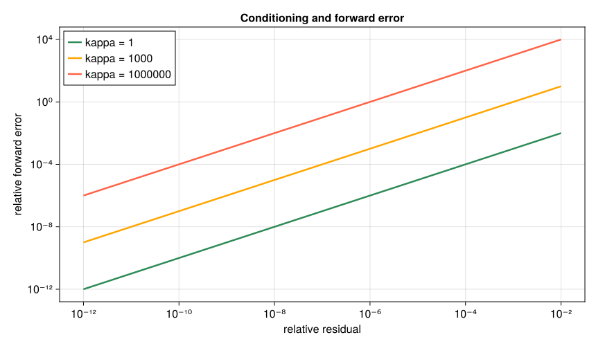

4. 誤差・条件数・計算量#
第3章では、連立方程式の解を求め、元の式に代入して残差を確かめた。では、「残差が \(10^{-8}\) だった」と聞けば、その答えは十分正確だと判断できるだろうか。
判断するには、まず問題の数値がどの程度の大きさかを知る必要がある。さらに、方程式を少し満たさないだけで解が大きく違う場合もある。本章では、ずれをどう測るか、問題がずれをどれほど増幅するか、計算手順がどのようなずれを生むかを順に考える。最後に、問題が大きくなったときの計算回数とメモリ量を見積もる。
4.1. この章の目標#
絶対誤差と相対誤差を、数値の尺度に応じて使い分けられる。
残差と解の誤差の違いを、小さな例で説明できる。
条件数を入力への敏感さとして読み、計算手順の安定性と区別できる。
問題サイズを増やしたときの演算回数と保存量の増え方を見積もれる。
基本部分の計算はJulia本体と標準ライブラリ LinearAlgebra、SparseArrays で実行できる。掲載図の再作成には追加パッケージ CairoMakie が必要だが、図はコードを実行せずに読める。第1章で扱った浮動小数点数のビット構成は繰り返さず、丸めの影響をどう評価するかに進む。
Tip
桁で読む習慣をつけよう。 Juliaの出力 1.0e-6 は \(1.0\times10^{-6}=0.000001\) を表す。本章では、\(10^{-6}\) と \(10^{-8}\) のような値を「差が \(0.00000099\)」とは読まず、「100分の1、つまり2桁小さい」と読む。誤差は何桁正しいかが大切であり、図でも縦軸・横軸に対数目盛（1目盛ごとに10倍）を使う。両軸が対数目盛の図では、\(y=Cx\) の関係は傾き1の直線、\(y=Cx^2\) は傾き2の直線に見える。
4.2. 同じずれでも、元の大きさで意味が変わる#
真の値が1000のときに1001と計算した場合と、真の値が2のときに3と計算した場合を比べよう。どちらも差は1だが、前者では0.1%、後者では50%のずれである。
真の値を \(x\)、近似値を \(\hat{x}\) とすると、絶対誤差と相対誤差を
で定める。絶対誤差は元の量と同じ単位を持ち、相対誤差は単位を持たない比である。例えばメートルをセンチメートルへ換算すると絶対誤差の数値は100倍になるが、相対誤差は変わらない。
for (xtrue, xhat) in ((1000.0, 1001.0), (2.0, 3.0))
absolute_error = abs(xhat-xtrue)
relative_error = absolute_error/abs(xtrue)
println("真の値=", xtrue, ", 近似値=", xhat,
": 絶対誤差=", absolute_error, ", 相対誤差=", relative_error)
end
真の値=1000.0, 近似値=1001.0: 絶対誤差=1.0, 相対誤差=0.001
真の値=2.0, 近似値=3.0: 絶対誤差=1.0, 相対誤差=0.5
相対誤差は便利だが、真の値が0なら定義できない。0に近い場合にも、ごく小さな絶対誤差が大きな相対誤差になる。例えば \(x=10^{-12}\)、\(\hat{x}=2\times10^{-12}\) なら、絶対誤差は \(10^{-12}\) だが相対誤差は1である。これを許せるかどうかは、目的や量の尺度による。
実際の判定では、「絶対誤差をこの程度まで許す」という基準と、「基準値の何割まで許す」という基準を組み合わせることが多い。例えば \(a\ge0\) を絶対許容誤差、\(r\ge0\) を相対許容誤差として、
という判定が考えられる。これは許容誤差を組み合わせる一例であり、ライブラリごとの判定式や既定値は確認して使う。isapprox が true になることだけで、その問題で必要な精度を満たすとは限らない。
4.3. ベクトルの誤差を一つの大きさにまとめる#
第3章では、ベクトルの長さを2ノルムで測った。複数の成分に誤差がある場合にも、差のベクトルにノルムを使える。例えば誤差が \((3,-4)^\mathsf{T}\) なら、長さは5である。
用途に応じて、成分の絶対値を足す測り方や、一番大きい成分だけを見る測り方も使う。
測り方 |
定義 |
\((3,-4)^\mathsf{T}\) の場合 |
読み方 |
|---|---|---|---|
1ノルム |
\(\lVert\mathbf{x}\rVert_1=\sum_i \lvert x_i\rvert\) |
7 |
成分の大きさの合計 |
2ノルム |
\(\lVert\mathbf{x}\rVert_2=\sqrt{\sum_i \lvert x_i\rvert^2}\) |
5 |
通常の幾何学的な長さ |
∞ノルム |
\(\lVert\mathbf{x}\rVert_\infty=\max_i \lvert x_i\rvert\) |
4 |
成分の大きさの最大値 |
どれか一つだけが正しい測り方というわけではない。例えば、すべての地点の誤差を一定以下にしたいなら最大値を見るのが自然である。同じ問題を比較するときは、どのノルムを使うかをそろえる。
using LinearAlgebra
error_vector = [3.0, -4.0]
println("1ノルム = ", norm(error_vector, 1))
println("2ノルム = ", norm(error_vector, 2))
println("∞ノルム = ", norm(error_vector, Inf))
1ノルム = 7.0
2ノルム = 5.0
∞ノルム = 4.0
ベクトルの相対誤差も、\(\mathbf{x}\ne\mathbf{0}\) のとき
と表せる。本章では、添字を省いたノルムは基本的にベクトルの2ノルムと、それに対応する行列の作用素ノルムを意味する。量の単位や尺度が成分ごとに大きく違う場合には、そのまま一緒に測ってよいかも考える必要がある。
4.4. 残差と解の誤差は何が違うか#
第3章の連立方程式
を思い出そう。真の解は \(\mathbf{x}=(2,1)^\mathsf{T}\) である。候補 \(\hat{\mathbf{x}}=(2.1,0.9)^\mathsf{T}\) には、二つの異なるずれがある。
解そのもののずれを前進誤差という。これは本当に知りたい量だが、真の解が分からなければ直接計算できない。一方、残差は \(\mathbf{A}\)、\(\mathbf{b}\)、\(\hat{\mathbf{x}}\) があれば計算できる。
A = [2.0 1.0; 1.0 3.0]
b = [5.0, 5.0]
xtrue = [2.0, 1.0]
xhat = [2.1, 0.9]
r = b-A*xhat
println("解の誤差の大きさ = ", norm(xhat-xtrue))
println("残差の大きさ = ", norm(r))
println("相対前進誤差 = ", norm(xhat-xtrue)/norm(xtrue))
println("相対残差 = ", norm(r)/norm(b))
解の誤差の大きさ = 0.14142135623730953
残差の大きさ = 0.22360679774997935
相対前進誤差 = 0.0632455532033676
相対残差 = 0.03162277660168385
前進誤差の大きさは約0.1414、残差の大きさは約0.2236であり、別の量になっている。右辺が0でない場合、残差を右辺の大きさで割った
を相対残差と呼ぶ。上の例では相対前進誤差が約0.06325、相対残差が約0.03162である。
4.4.1. 小さい残差でも、解が大きく違う例#
では、残差を小さくすれば必ず解も近づくのだろうか。次の方程式を考える。
これは \(x_1=1\)、\(\delta x_2=\delta\) という二つの式なので、解は \(\mathbf{x}=(1,1)^\mathsf{T}\) である。ところが \(\hat{\mathbf{x}}=(1,0)^\mathsf{T}\) という候補を代入すると、
と小さな相対残差が得られる。一方、第2成分を1だけ間違えているので、相対前進誤差は \(1/\sqrt{2}\approx0.7071\) である。
delta = 1.0e-6
A_delta = [1.0 0.0; 0.0 delta]
b_delta = [1.0, delta]
xtrue_delta = [1.0, 1.0]
xhat_delta = [1.0, 0.0]
r_delta = b_delta-A_delta*xhat_delta
println("残差 = ", r_delta)
println("相対残差 = ", norm(r_delta)/norm(b_delta))
println("相対前進誤差 = ", norm(xhat_delta-xtrue_delta)/norm(xtrue_delta))
残差 = [0.0, 1.0e-6]
相対残差 = 9.999999999995e-7
相対前進誤差 = 0.7071067811865475
ここでは、解法を実行して失敗させたのではなく、あえて誤った候補を作って残差を測った。第2成分のずれが、行列をかけると \(10^{-6}\) 倍に縮められるため、残差の大きさだけを見ると目立たなくなる。
また、第2式だけを見れば「右辺 \(10^{-6}\) に対して残差 \(10^{-6}\)」なので、大きな相対的ずれだと分かる。ベクトル全体のノルムで測る相対残差は、各方程式を個別の尺度で調べることと同じではない。単位や成分の尺度をそろえる意味も、この例から見えてくる。
4.5. 入力を少し変えると、解はどう動くか#
同じ行列で、右辺の第2成分だけを \(\varepsilon\) 増やしてみよう。
新しい解は
なので、第2成分の変化は入力の変化の \(1/\delta\) 倍になる。\(\delta=10^{-6}\) では \(\varepsilon=10^{-6}\) だけ右辺を変えると、解の第2成分が1から2に変わる。
この現象は、計算機の丸めや特定の解法が原因ではない。方程式を厳密に解いても起こる、問題そのものの入力への敏感さである。
epsilon = 1.0e-6
delta_b = [0.0, epsilon]
xchanged = A_delta \ (b_delta+delta_b)
println("元の解 = ", xtrue_delta)
println("右辺を変えた問題の解 = ", xchanged)
println("入力の相対変化 = ", norm(delta_b)/norm(b_delta))
println("解の相対変化 = ", norm(xchanged-xtrue_delta)/norm(xtrue_delta))
元の解 = [1.0, 1.0]
右辺を変えた問題の解 = [1.0, 2.0]
入力の相対変化 = 9.999999999995e-7
解の相対変化 = 0.7071067811865475
同じ大きさの変化でも、第1成分に加えれば解の変化はそのままである。影響は入力の変化の方向にもよる。感度を評価するには、最も大きく影響する方向も考えておく必要がある。
4.6. 行列ノルム：ベクトルの長さを最大何倍にするか#
第3章では行列を、ベクトルから別のベクトルを作る操作として見た。行列の大きさを測る一つの方法は、「その操作がベクトルの長さを最大何倍にするか」である。
例えば \(\mathbf{D}=\operatorname{diag}(1,\delta)\)、\(0<\delta\le1\) は第1成分をそのまま、第2成分を \(\delta\) 倍にする。どんなベクトルの長さも増やさず、\((1,0)^\mathsf{T}\) の長さは変えないので、最大の倍率は1である。
逆行列 \(\mathbf{D}^{-1}=\operatorname{diag}(1,1/\delta)\) は、第2成分を \(1/\delta\) 倍にするので、最大の倍率は \(1/\delta\) になる。
一般の行列に対して、この最大倍率を
と定義する。これを2ノルムからの**誘導行列ノルム（作用素ノルム）**という。ベクトルを何倍しても比は同じなので、長さ1のベクトルに限って最大値を探してもよい。
定義から、任意の \(\mathbf{v}\) について
が成り立つ。実際の倍率は最大倍率以下、という意味である。一般の \(p\) ノルムでも同じ定義ができる。誤差の評価では、ベクトルと行列で対応するノルムを使う。
4.6.1. Juliaのnormとopnorm#
Juliaでは opnorm(A, 2) がこの最大倍率を計算する。一方、行列に対する norm(A) は、全成分の絶対値の二乗和の平方根、すなわちFrobeniusノルムを返す。
こちらも行列の大きさを測る量だが、最大倍率とは異なる。例えば \(\operatorname{diag}(1,0.5)\) では、最大倍率は1、Frobeniusノルムは \(\sqrt{1+0.5^2}\approx1.118\) となる。
D = [1.0 0.0; 0.0 0.5]
println("最大倍率 opnorm(D, 2) = ", opnorm(D, 2))
println("全成分から測る norm(D) = ", norm(D))
for v in ([1.0, 0.0], [0.0, 1.0], [1.0, 1.0])
println("v=", v, ": 実際の倍率=", norm(D*v)/norm(v))
end
最大倍率 opnorm(D, 2) = 1.0
全成分から測る norm(D) = 1.118033988749895
v=[1.0, 0.0]: 実際の倍率=1.0
v=[0.0, 1.0]: 実際の倍率=0.5
v=[1.0, 1.0]: 実際の倍率=0.7905694150420948
4.7. 条件数で入力への敏感さを評価する#
正則な行列に対し、
を2ノルム条件数という。\(\kappa\) はギリシャ文字のカッパである。\(\mathbf{A}\) による最大倍率と、逆に解を求める操作による最大倍率を掛けて、相対的な変化の増幅を評価する。
この数は1以上となり、1に近ければ良条件、非常に大きければ悪条件という。どの程度の大きさが問題になるかは、入力誤差と必要な出力精度による。先ほどの対角行列では、
である。特異な行列には逆行列がなく、ここでの条件数は無限大とみなす。
Juliaでは cond(A) が2ノルム条件数を計算する。この関数を使うために inv(A) を自分で作る必要はない。また、定義中の2ノルムはFrobeniusノルムではないので、norm(A)*norm(inv(A)) として代用しない。
for d in (1.0, 0.01, 1.0e-6)
A_d = [1.0 0.0; 0.0 d]
println("第2対角成分=", d, ": 条件数=", cond(A_d))
end
第2対角成分=1.0: 条件数=1.0
第2対角成分=0.01: 条件数=100.0
第2対角成分=1.0e-6: 条件数=1.0e6
4.7.1. 残差と前進誤差を結ぶ#
条件数が何を保証するか、残差との関係から確かめよう。\(\mathbf{A}\mathbf{x}=\mathbf{b}\) と \(\mathbf{r}=\mathbf{b}-\mathbf{A}\hat{\mathbf{x}}\) から
を得る。作用素ノルムの不等式を使うと、
さらに \(\|\mathbf{b}\|_2=\|\mathbf{A}\mathbf{x}\|_2\le\|\mathbf{A}\|_2\|\mathbf{x}\|_2\) より、\(\mathbf{b}\ne\mathbf{0}\) の場合には
となる。すなわち、相対前進誤差は「条件数×相対残差」以下である。この式は厳密な演算で定義した残差に対する関係であり、実際に計算した残差や条件数にも丸めがある。とても小さい残差を精密に評価したい場合には、残差の計算精度にも注意する。
例えば、相対残差が \(10^{-8}\) でも条件数が \(10^2\) なら上界は \(10^{-6}\)、条件数が \(10^8\) なら上界は1になる。後者は、実際の誤差が必ず1になるという意味ではない。条件数は最大の増幅に基づく上界であり、すべての誤差がその倍率で増えるわけではない。
同じ議論は、右辺を変えた二つの問題にも適用できる。行列を固定し、\(\mathbf{A}\tilde{\mathbf{x}}=\mathbf{b}+\Delta\mathbf{b}\) とすれば、
ここでは、行列自体の変化は含めていない。また、条件数は採用する単位・尺度やノルムにも依存する。測定誤差の大きさや方向について情報があるなら、それも併せて判断する。
relative_residual = norm(r_delta)/norm(b_delta)
relative_forward_error = norm(xhat_delta-xtrue_delta)/norm(xtrue_delta)
error_bound = cond(A_delta)*relative_residual
println("相対残差 = ", relative_residual)
println("相対前進誤差 = ", relative_forward_error)
println("条件数×相対残差 = ", error_bound)
相対残差 = 9.999999999995e-7
相対前進誤差 = 0.7071067811865475
条件数×相対残差 = 0.9999999999995
4.7.2. 同じ残差でも、条件数によって見え方が変わる#
図では、\(\mathbf{A}=\operatorname{diag}(1,1/\kappa)\)、\(\mathbf{b}=(1,0)^\mathsf{T}\)、真の解 \(\mathbf{x}=(1,0)^\mathsf{T}\) として比較する。前の例から右辺を変え、増幅の最大倍率がそのまま現れるように選んだ例である。
右辺の第2成分に \(\varepsilon\) を加えた問題の解は、\(\hat{\mathbf{x}}=(1,\kappa\varepsilon)^\mathsf{T}\) になる。これを元の方程式に代入すると、残差は \((0,-\varepsilon)^\mathsf{T}\) である。したがって、相対残差は \(|\varepsilon|\)、相対前進誤差は \(\kappa|\varepsilon|\) になる。この例では上界に等しい増幅が起こるが、一般には上界より小さくなる。
両軸は対数目盛で、等間隔の目盛が等しい倍率に対応する。同じ横軸の値で縦軸を比べると、条件数が大きいほど大きな前進誤差が生じ得ることが読める。作図コードは図を再作成する場合だけ実行する。
Show code cell source
# 図を再作成する場合のみ実行する。
# 未導入なら一度だけ: import Pkg; Pkg.add("CairoMakie")
using CairoMakie
CairoMakie.activate!(type="svg")
let
fig = Figure(size=(860, 500), fontsize=16)
ax = Axis(fig[1,1]; xlabel="relative residual", ylabel="relative forward error",
xscale=log10, yscale=log10,
xticks=(10.0 .^ (-12:2:-2), ["10⁻¹²", "10⁻¹⁰", "10⁻⁸", "10⁻⁶", "10⁻⁴", "10⁻²"]),
yticks=(10.0 .^ (-12:4:4), ["10⁻¹²", "10⁻⁸", "10⁻⁴", "10⁰", "10⁴"]),
title="Conditioning and forward error")
for (kappa, color) in zip((1.0, 1.0e3, 1.0e6), (:seagreen, :orange, :tomato))
A_plot = [1.0 0.0; 0.0 1/kappa]
b_plot = [1.0, 0.0]
x_plot = [1.0, 0.0]
residuals = Float64[]
errors = Float64[]
for epsilon in 10.0 .^ range(-12, -2, length=120)
candidate = A_plot \ (b_plot + [0.0, epsilon])
push!(residuals, norm(b_plot-A_plot*candidate)/norm(b_plot))
push!(errors, norm(candidate-x_plot)/norm(x_plot))
end
lines!(ax, residuals, errors; color=color, linewidth=2.5,
label="kappa = $(Int(kappa))")
end
axislegend(ax; position=:lt)
figure_dir = isdir("pic") ? "pic" : joinpath("..", "pic")
save(joinpath(figure_dir, "conditioning_error_amplification.svg"), fig)
end


図 4.1 この例では相対前進誤差が条件数と相対残差の積に等しくなる。図は問題の感度を示しており、右辺を変えた問題を解いた計算自体が不正確だったという意味ではない。#
4.8. 丸めは計算の途中でも起こる#
ここまでは主に、入力や候補解を変えたときの関係を考えた。実際の計算では、第1章で見たように、数を有限桁で保存する丸めも加わる。
eps(Float64) は1とその次に大きい倍精度数との間隔で、約 \(2.22\times10^{-16}\) である。最も近い表現可能数へ丸める方式では、1回の丸めの相対誤差を評価する基準として
を用い、単位丸め誤差と呼ぶ。これは第1章で定義したマシンイプシロンの半分である。
実数 \(z\) を丸めた結果を \(\operatorname{fl}(z)\) と書くと、通常の正規化数の範囲では
というモデルで表せる。ここでの \(\delta\) は1回の丸めを表す相対的なずれであり、前の対角行列の小さな成分とは別の量である。四則演算の厳密な結果を \(z\) とすれば、演算結果を保存するときの丸めにもこの見方を使える。オーバーフローや非正規化数の領域などでは、この相対誤差モデルをそのまま使えない。
println("マシンイプシロン = ", eps(Float64))
println("単位丸め誤差 = ", eps(Float64)/2)
println("0.1 + 0.2 - 0.3 = ", 0.1 + 0.2 - 0.3)
マシンイプシロン = 2.220446049250313e-16
単位丸め誤差 = 1.1102230246251565e-16
0.1 + 0.2 - 0.3 = 5.551115123125783e-17
このモデルは、計算全体の誤差が \(u\) 以下だという意味ではない。途中で生じた小さな誤差が、その後の演算で目立つようになる場合がある。
4.9. 計算手順の安定性：同じ式をどう計算するか#
小さい正の \(x\) に対して
を計算しよう。\(\sqrt{1+x}\) と1はほぼ等しい。平方根の値に含まれるわずかな誤差も、小さな差を求めた後では、答えに対して大きな割合を占めることがある。このように、近い値の差で有効数字が失われる現象を桁落ちという。引き算の丸めだけでなく、引かれる値がすでに持っている誤差にも注目する。
分子・分母に \(\sqrt{1+x}+1\) を掛けると、
となる。小さい \(x>0\) では分母は約2なので、答えは約 \(x/2\) である。この書き方なら、ほぼ等しい二つの数を引く必要がない。
次のコードでは、二つの計算結果と相対誤差を比べる。比較の基準には、同じ入力を多くの桁で計算する BigFloat を使う。BigFloat(x) は、すでに保存された入力 x を高精度の型へ移す操作であり、入力時に失った情報を復元するものではない。ここでは同じ入力に対する計算手順の違いを調べるために使う。
for x in (1.0e-8, 1.0e-12, 1.0e-16)
direct = sqrt(1+x)-1
rationalized = x/(sqrt(1+x)+1)
reference = setprecision(BigFloat, 256) do
xb = BigFloat(x)
xb/(sqrt(1+xb)+1)
end
direct_error = Float64(abs((BigFloat(direct)-reference)/reference))
rationalized_error = Float64(abs((BigFloat(rationalized)-reference)/reference))
println("x=", x, ": 直接=", direct, ", 有理化=", rationalized)
println(" 相対誤差: 直接=", direct_error, ", 有理化=", rationalized_error)
end
x=1.0e-8: 直接=4.999999969612645e-9, 有理化=4.9999999875e-9
相対誤差: 直接=3.5774710132883877e-9, 有理化=5.4655958769870005e-17
x=1.0e-12: 直接=5.000444502911705e-13, 有理化=4.99999999999875e-13
相対誤差: 直接=8.890058259105395e-5, 有理化=1.210897000984255e-17
x=1.0e-16: 直接=0.0, 有理化=5.0e-17
相対誤差: 直接=1.0, 有理化=2.5e-17
\(x=10^{-16}\) では直接計算の値は0となり、相対誤差は1になる。一方、有理化した式では約 \(5\times10^{-17}\) が得られる。高精度での比較値も厳密値そのものではないが、この例の差を調べるには十分な精度を持つ。
ここでは、求めたい関数も入力も同じで、変えたのは計算手順だけである。小さな正の \(x\) で \(f(x)\approx x/2\) だから、入力が相対的に少し変われば、答えもおおむね同じ割合だけ変わる。この問題自体が入力の相対誤差を極端に増幅するために、0が出たわけではない。
丸めの影響を、問題が本来持つ敏感さに見合う程度に抑える計算手順を、安定性の観点から評価する。この例では、小さい正の \(x\) に対する有理化した式の方が安定に評価できる。もちろん、どの式が適切かは入力の範囲にもよる。
観点 |
何の性質か |
この章の例 |
対応を考える方向 |
|---|---|---|---|
条件の良し悪し |
入力から答えを定める問題の性質 |
小さい対角成分の方程式が、入力の変化を増幅する |
入力の精度、尺度、求めたい量を確認する |
計算手順の安定性 |
問題を解くアルゴリズムの性質 |
平方根の差の直接計算で丸めの影響が大きくなる |
式の変形や解法の選択を検討する |
安定な方法でも、入力データに含まれる不確かさを消せるわけではない。また、ある入力で正解が出たことだけでは、アルゴリズムが一般に安定だとは言えない。
4.10. 後退誤差：どの近い問題なら正確に解けているか#
安定性を考えるために、計算結果を別の向きから見る。解の方を真の解へ近づける代わりに、計算結果が厳密解になるよう入力を少し変えるのである。
例えば \(2x=1\) に対して \(\hat{x}=0.49\) が得られたなら、\(2\times0.49=0.98\) なので、\(\hat{x}\) は \(2x=0.98\) の厳密解である。解の誤差は0.01だが、右辺を変えた量は \(0.98-1=-0.02\) である。
連立方程式でも、\(\mathbf{r}=\mathbf{b}-\mathbf{A}\hat{\mathbf{x}}\) なら、
つまり、行列を固定して右辺を \(-\mathbf{r}\) だけ変えれば、計算結果は厳密解になる。このように入力側で測るずれを後退誤差という。行列を固定して右辺だけを変える場合の相対後退誤差は、\(\mathbf{b}\ne\mathbf{0}\) のもとで相対残差 \(\|\mathbf{r}\|/\|\mathbf{b}\|\) に等しい。
この見方なら、真の解を知らなくても、計算結果を近い問題の解として評価できる。ただし、近い問題の解でも、元の問題が悪条件なら解の前進誤差は大きくなり得る。先ほどの対角行列の例は、その具体例でもある。
4.10.1. 後退安定性の意味#
丸め精度と問題サイズに見合う小さな入力の変化で、計算結果を厳密解として説明できるアルゴリズムを後退安定という。入力の変化を何に許すか、どの尺度で測るかを指定して使う。
例えば線形方程式の解法では、右辺だけでなく行列にも変化を許し、
と解釈して、\(\Delta\mathbf{A}\) と \(\Delta\mathbf{b}\) がそれぞれ元の入力に対して小さいかを調べることがある。右辺だけの後退誤差と、この場合の後退誤差は同じ定義ではない。
本章では「前進は解のずれ、後退は入力のずれ」という方向の違いを押さえよう。良条件な問題を後退安定な方法で解けば、前進誤差も小さく抑えられると期待できる。数値解法の評価では、この二つを組み合わせて考える。
4.11. 問題サイズを倍にすると、計算は何倍になるか#
ここまでは答えの精度を見た。もう一つ重要なのが、答えを得るための仕事量である。第1章では、Euler法のステップ数を倍にすると更新回数も倍になった。行列を使う計算では、何が何個増えるかを考える。
4.11.1. 内積から数えてみる#
\(n\) 成分の内積 \(\sum_{i=1}^n x_i y_i\) を、各積を計算してから足す手順では、乗算が \(n\) 回、加算が \(n-1\) 回必要である。合計は \(2n-1\) 回で、\(n\) が大きければ約 \(2n\) 回となる。浮動小数点の加減乗除などを数える単位を flop と呼ぶ。
\(n\times n\) 行列とベクトルの積では、この内積を行ごとに \(n\) 回行う。行列同士の通常の積では、結果の各成分について内積を作り、それが \(n^2\) 個ある。
計算 |
通常の手順での演算回数 |
主要な増え方 |
\(n\) を倍にしたとき |
|---|---|---|---|
ベクトルの内積 |
\(2n-1\) |
\(O(n)\) |
約2倍 |
行列とベクトルの積 |
\(n(2n-1)\) |
\(O(n^2)\) |
約4倍 |
行列と行列の積 |
\(n^2(2n-1)\) |
\(O(n^3)\) |
約8倍 |
ここでの行列は、一般の密な正方行列である。\(m\times n\) の行列と \(n\) 成分のベクトルなら、同じ数え方で約 \(2mn\) 回、すなわち \(O(mn)\) となる。
余談: Strassenのアルゴリズム
行列行列積のアルゴリズムの演算回数は、通常の手順では \(O(n^3)\) であるが、それよりも少ないスケーリングで計算できる方法が知られている。1969年に Volker Strassen が発表した Strassenのアルゴリズムは、行列積の演算回数を \(O(n^{\log_2 7})\approx O(n^{2.807})\) に減らす方法である。60年代に発表されて以降、数多くの改良が提案されている。実際には、下で述べるように、スケーリングにひっつく定数倍の影響が大きく計算機上の高速化に必ずしも繋がらない。 スケーリングの比較をしているのか、(定数も含めた)実際の演算回数や計算時間を比較しているのか、どちらを見ているかに注意する必要がある。
4.11.2. Big-Oは増え方を表す#
\(O(n^2)\) などの Big-O記法は、大きな \(n\) に対する増え方を表す。本章の計算量の見積もりでは、主要な項の次数を使っている。例えば \(3n^2+10n+7\) なら、定数倍や低次の項を省いて \(O(n^2)\) と書く。
これは実行時間そのものを表す式ではない。コンパイル、メモリへの読み書き、使う計算機なども時間に影響する。まず演算回数から規模の見通しを立て、その上で必要なら時間を測る。
println("n | 内積の演算回数 | 行列ベクトル積 | 行列行列積")
for n in (100, 200, 400)
inner = 2*n-1
matvec = n*inner
matmul = n^2*inner
println(n, " | ", inner, " | ", matvec, " | ", matmul)
end
n | 内積の演算回数 | 行列ベクトル積 | 行列行列積
100 | 199 | 19900 | 1990000
200 | 399 | 79800 | 15960000
400 | 799 | 319600 | 127840000
この表は、行列の積そのものを実行した時間ではなく、上で数えた回数を表示している。サイズを倍にしたとき、約2倍・4倍・8倍の増え方になることを確かめよう。
参考までに、Big-O記法の定義を簡単に書いておこう。
Big-O記法
関数 \(f(n)\) が \(g(n)\) に比例するとき、\(f(n) = O(g(n))\) と書く。これは、ある定数 \(c\) と \(n_0\) が存在し、すべての \(n \geq n_0\) に対して \(|f(n)| \leq c|g(n)|\) が成り立つことを意味する。
4.12. 保存する量も見積もる：密行列と疎行列#
計算回数とメモリ量は別の量である。\(n\times n\) の行列をすべて保存するなら、成分は \(n^2\) 個ある。Float64 は1個8バイトなので、数値データだけで \(8n^2\) バイトを要する。
行列の大きさ |
成分数 |
数値データの量（概数） |
|---|---|---|
\(1000\times1000\) |
\(10^6\) |
8 MB |
\(10000\times10000\) |
\(10^8\) |
800 MB |
ここでは1 MBを \(10^6\) バイトとしている。行列を複数作ればその分が必要で、作業用の領域にもメモリを使う。成分数を数えるだけでも、気軽に全体を作ってよいかの判断材料になる。
4.12.1. 0が多い行列では、必要な成分だけを持つ#
例えば次の行列は、対角線とその上下以外が0である。
このような三重対角行列は、隣接する点同士の関係を表す計算などに現れる。\(n\times n\) でも非零成分は \(n+2(n-1)=3n-2\) 個なので、0を含む \(n^2\) 個すべてに同じ記憶量を使う必要はない。
非零成分が少ない行列を疎行列という。非零の値とその位置を記録する形式を使うと、保存量や演算を減らせる。位置の記録にもメモリが必要なため、「非零値の個数×8バイト」が全保存量になるわけではない。
using SparseArrays
n_sparse = 5
S = spdiagm(-1 => fill(-1.0, n_sparse-1),
0 => fill(2.0, n_sparse),
1 => fill(-1.0, n_sparse-1))
println("行列の形 = ", size(S))
println("非零成分数 = ", nnz(S))
println("全成分数 = ", n_sparse^2)
println("S*[1,1,1,1,1] = ", S*ones(n_sparse))
行列の形 = (5, 5)
非零成分数 = 13
全成分数 = 25
S*[1,1,1,1,1] = [1.0, 0.0, 0.0, 0.0, 1.0]
spdiagm は、指定した対角線に値を並べて疎行列を作る関数である。0 は主対角線、-1 と 1 はその下と上の対角線を表す。fill(値, 個数) は同じ値を並べ、ones(n) は1を \(n\) 個並べる。この例では非零成分数が13で、積は \((1,0,0,0,1)^\mathsf{T}\) となる。内部の行では \(-1+2-1=0\) になることを、表示した行列から確認できる。
疎行列の行列ベクトル積では、主に非零成分に対して積和を行う。出力ベクトルの初期化なども含めると、\(m\times n\) 行列では一般に \(O(\operatorname{nnz}(A)+m+n)\) 程度の仕事を考える。ここでの三重対角行列は非零成分も行数・列数も \(O(n)\) なので、保存量も積の計算量も \(O(n)\) になる。密な表現で通常の積を行う \(O(n^2)\) と比べ、構造を使う利点がある。
ただし、疎行列の連立方程式を解く途中では、もともと0だった位置に非零成分が現れる fill-in が起こることがある。疎行列だから、どの計算も必ず非零成分数に比例するとは限らない。計算の種類と行列の構造を一緒に見ることが大切である。
4.13. \(\clubsuit\) ノルムの性質と他の行列ノルム#
本文のノルムを、一般の誤差評価に使うための性質をまとめる。この節は必要になったときに参照してよい。
ノルムは、非負性と0になる条件、スカラー倍との関係、三角不等式を満たす。
最後の式は、二つの誤差を足した大きさを、それぞれの大きさの和で抑えられることを意味する。行列全体もベクトル空間なので、同じ性質を満たす尺度を行列ノルムと呼ぶ。
ベクトルの \(p\) ノルムから誘導する作用素ノルムは
であり、1ノルムは各列の絶対値和の最大値、∞ノルムは各行の絶対値和の最大値で計算できる。
例えば \(\begin{bmatrix}1&-2\\3&4\end{bmatrix}\) では、列の和は4と6、行の和は3と7なので、1ノルムは6、∞ノルムは7となる。Juliaでは opnorm(A, 1)、opnorm(A, Inf) と書く。
対応するノルムでは \(\|\mathbf{A}\mathbf{x}\|_p\le\|\mathbf{A}\|_p\|\mathbf{x}\|_p\) が成り立ち、適合するサイズの行列同士にも \(\|\mathbf{A}\mathbf{B}\|_p\le\|\mathbf{A}\|_p\|\mathbf{B}\|_p\) が成り立つ。条件数も \(\kappa_p(\mathbf{A})=\|\mathbf{A}\|_p\|\mathbf{A}^{-1}\|_p\) と定義でき、本文の残差の上界を同じように導ける。
一般の行列の2ノルムをどう計算するかは、特異値分解とも関係し、第12章で扱う。ここでは最大倍率としての定義を理解しておけばよい。
4.14. \(\clubsuit\) 計算を再利用するという考え方#
反復計算では、1回あたりの演算だけでなく、何を繰り返しているかを見ると改善の余地が分かる。例えば y = A*x は結果を入れる新しいベクトルを作る。出力用の y をあらかじめ用意すれば、mul!(y, A, x) でそこへ上書きできる。末尾の ! は、引数の内容を変更する関数によく使われるJuliaの命名上の慣習である。
連立方程式でも、同じ行列に対して右辺だけを何度も変える場合、解法の準備を再利用できる。第5章で学ぶLU分解では、一般の密な \(n\times n\) 行列を分解する準備に \(O(n^3)\)、その結果を使って1本の右辺を解くのに \(O(n^2)\) の計算を要する。右辺が増えるたびに準備からやり直す必要はない。
これは「一度作った道具を何度も使う」という考え方である。具体的な実装は次章で学ぶので、ここでは計算のどの部分を再利用できるかに注目しよう。
4.15. まとめ#
本章のまとめ
絶対誤差はずれそのもの、相対誤差は基準の大きさに対する割合を測る。
残差は方程式への代入のずれであり、解そのものの前進誤差とは異なる。
条件数は入力への敏感さを表す。相対前進誤差は、条件数と相対残差の積で上から評価できる。
安定性は計算手順の性質である。後退誤差は、計算結果を厳密解とするための入力側のずれを測る。
問題サイズが倍になると、通常の内積・密行列ベクトル積・密行列同士の積の主要な演算回数は約2倍・4倍・8倍になる。
演算回数とメモリ量を分けて考え、疎性などの構造を利用する。
次の第5章「連立一次方程式：Gauss消去法とLU分解」では、A \ b の中で使われる基本的な解法を学ぶ。本章で区別した「問題の感度」「計算手順の安定性」「必要な仕事量」を意識しながら、解法の選び方を考えていこう。
4.16. 演習#
本文の表・式・出力を使って説明してよい。使う尺度と、比較している量を明らかにしよう。
演習
同じ誤差でも意味が違う：真の値1000に対して1001、真の値2に対して3という二つの近似がある。絶対誤差と相対誤差を求め、「相対誤差が1%以内」という基準を満たすのはどちらか説明せよ。真の値が0なら、どのような基準を考えたいか。
小さな残差をどう読むか：本文の対角行列の例で、候補 \((1,0)^\mathsf{T}\) は第2成分を1だけ間違えている。それでも残差が小さい理由を、第2式に代入して説明せよ。条件数について何が分かれば、残差から解の精度を判断しやすくなるか。
問題と手順を区別する：「右辺を少し変えただけで厳密解も大きく変わる」場合と、「同じ入力でも平方根の差を有理化すると計算結果が改善する」場合では、何が問題になっているか。本文の例を使って違いを説明せよ。
計算の規模を予想する：密な正方行列の行数・列数をそれぞれ倍にすると、成分を保存するメモリ量と、通常の行列同士の積の演算回数は、それぞれおよそ何倍になるか。三重対角行列で0以外の値と位置だけを保存する場合は、保存量の増え方がどう変わるか考えよ。
4.17. 参考文献と関連する節#
T. A. Driscoll and R. J. Braun, Fundamentals of Numerical Computation, §1.2 Problems and conditioning、§1.4 Stability、§2.8 Conditioning of linear systems。問題の感度、アルゴリズムの安定性、線形方程式の誤差評価。
Julia公式：LinearAlgebra、SparseArrays。ノルム・条件数・疎行列を扱う関数の説明。